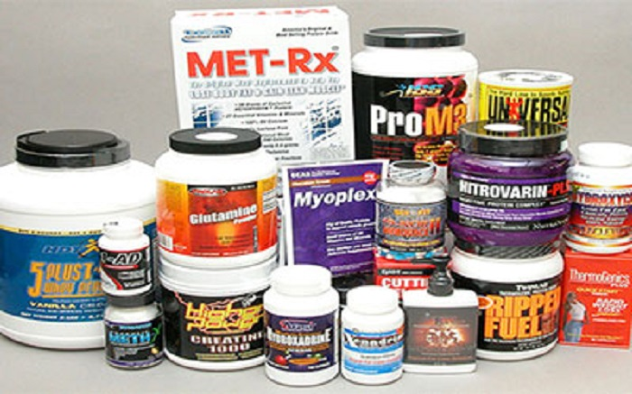
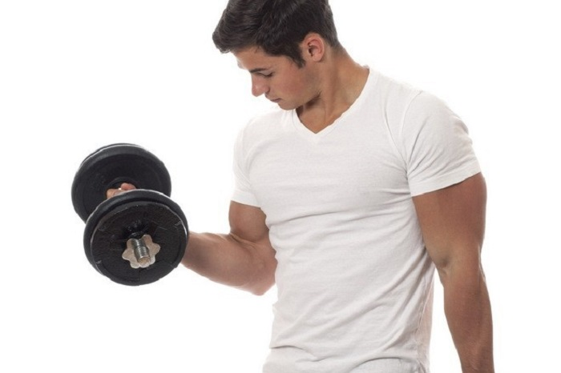
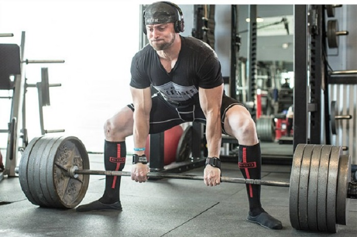
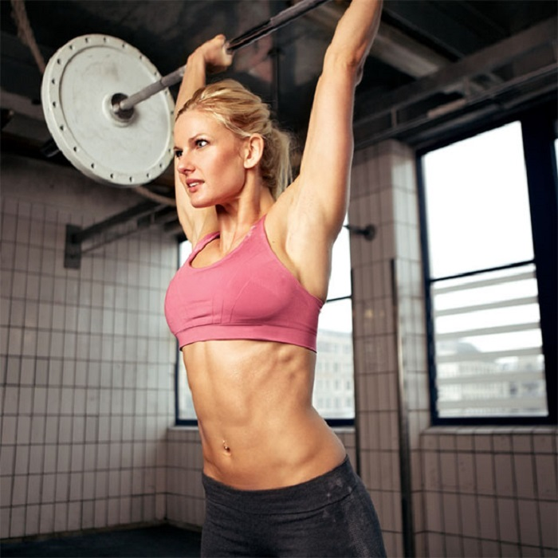
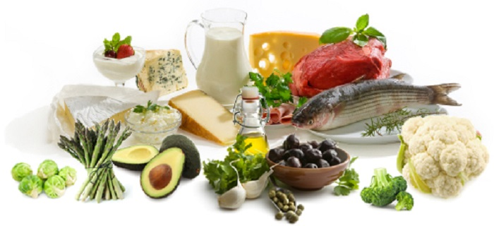
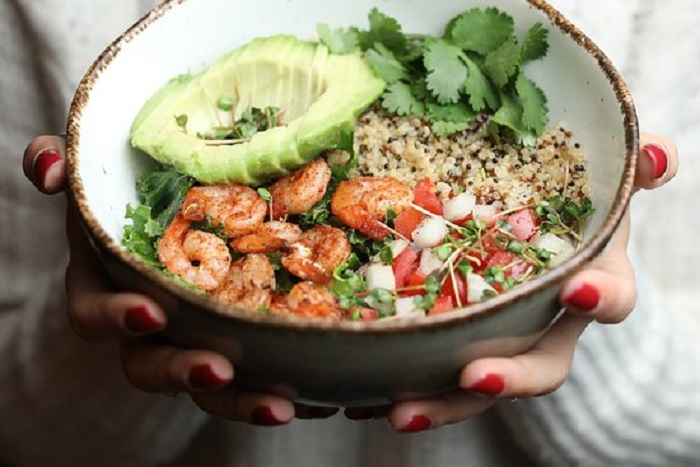
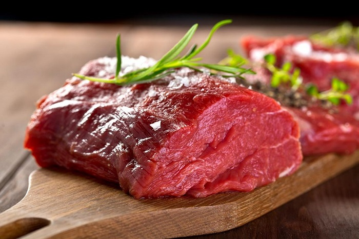
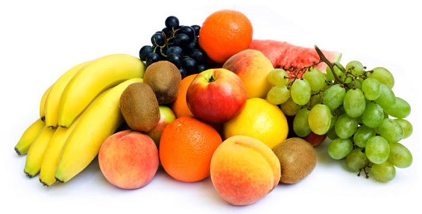
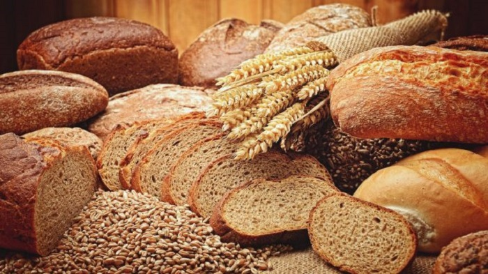

MITOVI O FITENSU!
Trebali bismo odma da razjasnimo, najbolji savet koji mozete da dobijete u vezi ishrane i treninga jeste, DA SLUSATE SVOJE TELO. Zbog cega ovo govorim, pre sve ga ne bi doslo do povreda u teretani i da ne bi doslo do pogorsanja zdravlja. Najbitnija stvar jeste da sve sto procitate na ovom ili na nekom drugom sajtu, pogledate na videu, ili procitate u novinama, PRILAGODITE SEBI I SVOJIM MOGUCNOSTIMA.
TOP 5 MITOVA O TRENINGU!
Trbušnjaci tope salo oko stomaka!

Salo sa stomaka može da se istopi samo kontrolisanim unosom kalorija i redukovanom, ali pravilnom ishranom – Ne izgladnjivanjem. Trbušnjaci su super vežbe za oblikovanje mišića i povećanje six packa, ali ne i za smanjenje sala oko istih.
Suplementacija je neophodna!

Niko ne osporava efekte dodataka, ali oni ne mogu da ti budu zamena za obrok. Šta više, većina tablet, praškova, napitaka i magičnih eliksira nisu u stvari Sveti Gral kakvim se smatraju i unošenje suplemenata mora da bude kontrolisano od strane stručnjaka. Magnezijum, kalcijum, Beta karoten, C vitamin i slični dodaci ishrane super su za zadovoljavanje dnevnog unosa potrebnih vitamina, ali postoje i suplementi koji mnogo obećavaju, ali još uvek nemaju potvrđenih efekata.
Vezbe za izolaciju msica su najkorisnije!

Koliko samo čujemo izjave poput onih da je ponedeljak dan za grudi, danas radim samo biceps ili triceps, Never skip your leg day… Planirati trening znači postaviti jasan cilj. Na osnovu cilja prave se vežbe, kako grupnih tako i individualnih treninga.
Niko ne kaže da ciljane vežbe neće doneti efekte. One su super za stvaranje fit izgleda, ali ne i fit osobe.
Mrtva dizanja i čučnjevi su opasni!

Ove pokrete pravimo u svakodnevnom zivotu i da to ne znamo. Opasnost od ovih pokreta postoji, naravno, kao što postoji od svih pokreta. Bitno je samo da kontrolišeš kilažu sa kojom radiš ove vežbe jer ćeš tako i smanjiti mogućnost povrede. Ali, to ne znači da su ove vežbe opasne. Najbitnija stvar kod izvodjenja ovako kompleksnih vezbi jeste da ne budete egolifter, vec razuman vezbac!
Zena ce postati kao muskarac!

Žene ne mogu da postanu velike i glomazne iz jednog vrlo bezazlenog razloga: Njihova tela ne stvaraju dovoljno testosterona za izgradnju velikih glomaznih mišića.Testosteron je ključni sastojak za nabijanje mišićne mase, a jedini način na koji žene mogu da dobiju veliku mišićnu masu jesu steroidi, injekcije hormona i suplementi iz D kategorije. Zato, ukoliko si žena, ne treba da se bojiš da dižeš velike težine. Podizanje veće kilaže samo će te učiniti jakom, a ne muškobanjastom.
TOP 5 MITOVA O ISHRANI!
Masti su lose!

Dobre masti su zdrave za srce i mozak i nisu sve masti loše.
Namirnice kao što su riba i koštunjavo voće sadrže „zdrave“ masti koje su u stvari dobre za vaše telo i mozak. Štaviše, veći unos ovih namirnica može čak da smanji rizik od demencije.
Zdrava ishrana je skupa!

Zdrava hrana je pristupačnija nego što mislite.
Međutim, jeftina zdrava hrana postoji ako možete da je nabavite. Voće i povrće, sveže, zamrznuto i konzervirano, mnoge žitarice, pa čak i meso, mnogo su pristupačniji nego što ste možda svesni. U svakom slucaju je zdravije i jeftinije kupiti belo meso i pirinac i spremiti ih kod kuce nego, kupiti pljeskavicu i pomfrit.
Crveno meso izaziva rak!

Prednosti mesa daleko premašuju rizik koji mu se pripisuje u ishrani. Možete da unosite raznovrsno meso i druge namirnice bogate proteinima da biste ostali zdravi i smanjili rizik od dobijanja kancera.
Seceri iz voca goje!

Vašem telu je potreban šećer.
Šećere u voće nisu stavili ljudi. Ovi šećeri su dobri za vas. Voće takođe sadrži vlakna i druge hranljive materije koji su vašem telu potrebni.
Gluten goji!

Gluten može da iritira digestivni sistem kod nekoga, ali nije tako strašan.
Ljudi koji imaju celijakiju ili su netolerantni na gluten ne treba da ga unose. Mnogi, međutim, odlučuju da ga izbace iz ishrane misleći da je tako zdravije. Ne postoje naučni dokazi koji to potvrđuju. Ako se gojite, velika je verovatnoća da vam gluten nije najveći problem u ishrani.